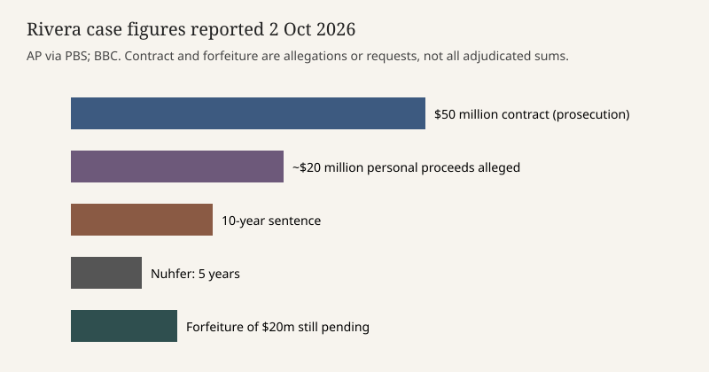

Miami · foreign-agent case · 2 October 2026
A Miami federal judge sentenced former Representative David Rivera to 10 years

What is agreed across desks
On Friday, 2 October 2026, U.S. District Judge Melissa Damian in Miami sentenced former Representative David Rivera to 10 years in federal prison. The Associated Press, the BBC, and the New York Times agree on the length of the sentence, Rivera’s age of 61, his single House term as a Florida Republican from 2011 to 2013, a May conviction, and the core charges: conspiracy related to money laundering and failure to register as a foreign agent. He has been jailed since the conviction.
Prosecutors said a consulting firm tied to Rivera took a $50 million contract, described as covering about three months of work in 2017 and 2018, from a U.S.-based affiliate of Venezuela’s state oil company PDVSA. The government theory is that the contract was cover for undisclosed lobbying of members of Congress and the first Trump White House on behalf of Nicolás Maduro’s government. AP says Rivera was tapped by then-foreign minister Delcy Rodríguez, now described as Venezuela’s acting president. Co-defendant Esther Nuhfer received five years. A request that Rivera forfeit about $20 million is still pending. A related foreign-lobbying case in Washington is also still open. Defense lawyers have said they will appeal and have applied for a presidential pardon.
What is only a quote
Rivera told the judge he has had prostate cancer and that a long sentence would be a “death sentence.” That is a plea for mercy, not a medical finding in the judgment. Judge Damian said the evidence showed the money came from the Maduro government and that Miami friends of Rivera would not accept the same conduct if the payor had been Cuba’s government. “There’s no dispute this money came from the Maduro regime,” she said, in the AP account. The defense said Rivera believed the contract was commercial work to bring ExxonMobil back to Venezuela, a category often outside the Foreign Agents Registration Act, and that meetings with officials were a separate effort. Damian rejected the “piece of paper” framing: “This is a serious offense. It’s not about not filing a piece of paper.”
Secretary of State Marco Rubio, Representative Pete Sessions, and a lobbyist testified that Rivera had not told them about the contract. Rubio was a former housemate of Rivera in Tallahassee. AP reports coded chat names used in a group called MIA — Maduro as “bus driver,” Sessions as “Sombrero,” Rodríguez as “The Lady in Red,” payments as “La Luz,” Rubio as “Miss Clairol.” Those labels are trial exhibits as described by prosecutors, not a finding that the nicknamed people joined the scheme. U.S. Attorney Jason Reding Quiñones said after sentencing, “He sold his anti-communism to communists to fill his greed.” That is a prosecutor’s line.
Mechanism and history a reader needs
The Foreign Agents Registration Act requires people who lobby in the United States for a foreign government, under defined conditions, to disclose the relationship. Failing to file is not, by itself, the whole of this case. Prosecutors argued concealment, backdated documents, and sham agreements, including one they said justified a $3.75 million transfer tied to a yacht used by media owner Raúl Gorrín, who was later charged in a separate bribery matter. A jury in May accepted the government’s account on the counts of conviction. An appeal can still test the instructions, the commercial-exemption argument, and the sentence.
The politics around the sentence are easy to flatten. Rivera was indicted in 2022, during the Biden administration. AP notes that illegal-foreign-lobbying charges have fallen since President Trump returned to office, and that pardon papers are in. A drop in charging is not a holding that this conviction is void. Sessions sent a leniency letter. Friends including a former Florida International University president and the Miami-Dade elections supervisor attended. None of that changes the judgment entered on Friday.
The sum of money also needs care. Fifty million dollars is the contract figure used by prosecutors. About twenty million is the personal-proceeds figure they want forfeited. Neither number is a court-ordered restitution amount as of the stories scored here, because forfeiture is still open. BBC’s shorthand that the oil firm is “also known as Citgo” compresses a corporate chain — PDVSA, a U.S. affiliate, and the Citgo brand — and should not be read as a finding that Citgo’s current board hired him.
What this story is not
It is not a conviction of Rubio, Sessions, or Rodríguez. It is not proof that U.S. policy toward Venezuela in 2017 moved because of the contract; AP says the outreach unraveled after Trump sanctioned Maduro. It is not a photograph of the sentencing. The Capitol exterior is a type image of the building whose members he once sat among.

Source articles and scores
| Outlet | Headline | T | N | C |
|---|---|---|---|---|
| Associated Press (PBS) | Former GOP Rep. David Rivera sentenced to 10 years for secret Venezuela lobbying | 96 | +2 | 98 |
| BBC | Ex-US congressman sentenced to 10 years in prison for $50m lobbying scheme | 93 | 0 | 94 |
| New York Times | Former Florida Rep. David Rivera Sentenced to 10 Years in Venezuela Lobbying Case | 92 | -4 | 90 |